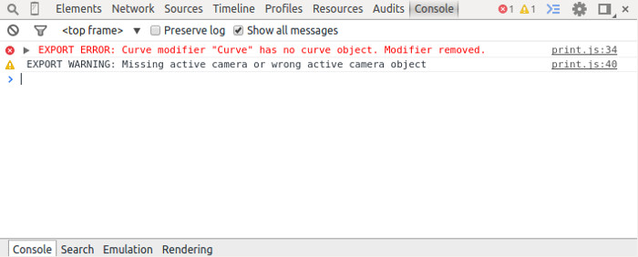

Аддон¶
Ошибки инициализации¶
Ошибки инициализации могут проявляться при инициализации аддона, либо при загрузке сцены в Blender. При возникновении появится диалоговое окно с описанием ошибки.

| Сообщение об ошибке | Причина |
|---|---|
| Blend4Web initialization error! Addon is not compatible with the PLATFORM platform. | Ошибка загрузки аддона. Аддон не совместим с платформой PLATFORM. |
| Warning: Blender version mismatch. Blender VER_REQUIRED is recommended for the Blend4Web addon. Current version is VER_CURRENT. | Предупреждение о возможной несовместимости с текущей версией Blender. Для работы рекомендуется версия Blender’а VER_REQUIRED. Текущая версия - VER_CURRENT. |
Критические ошибки экспорта¶
При возникновении ошибок во время экспорта появляется диалоговое окно BLEND4WEB EXPORT ERROR с описанием проблемы:
COMPONENT - тип компонента (объект, меш, материал, текстура и т.д.), при экспорте которого произошла ошибка.
NAME - имя компонента.
ERROR - краткое описание возникшей проблемы на англ. языке.

| Сообщение об ошибке | Причина |
|---|---|
| Dupli group error; Objects from the GROUP_NAME dupli group on the OBJECT_NAME object cannot be exported | Ни один из объектов группы GROUP_NAME, выбранной для дублирования на объекте OBJECT_NAME, не экспортируется. Требуется разрешить экспорт хотя бы одного из объектов группы, либо убрать дублирование группой. |
| Export to different disk is forbidden | Не разрешен экспорт в директорию, находящуюся на другом диске |
| Incompatible objects with a shared mesh; The OBJECT_NAME object has both vertex groups and a shared mesh | Несовместимые объекты с общим мешем. Не допускается экспорт объекта с общим мешем и вертексными группами. Исключения: экспорт возможен, если на объекте включены опции Apply modifiers, Export vertex animation, Export edited normals, Apply scale (т.к. в этом случае при экспорте происходит полное копирование мешей). |
| Incomplete mesh; Material slot is empty | Неполный меш: пустой слот материала. |
| Incomplete vehicle. The NAME vehicle doesn’t have any chassis or hull | Моделируемое средство передвижения NAME является незавершенным: оно должно содержать один элемент Chassis или Hull. |
| Incomplete vehicle. The NAME vehicle requires at least one bob | Моделируемое средство передвижения NAME является незавершенным: оно должно содержать хотя бы один элемент Bob. |
| Incomplete vehicle. The NAME vehicle requires at least one wheel | Моделируемое средство передвижения NAME является незавершенным: оно должно содержать хотя бы один элемент wheel. |
| Incorrect mesh; Wrong group indices | Меш содержит вершины, привязанные к несуществующей группе. |
| Incorrect vertex animation; Object has no vertex animation | Включен экспорт вертексной анимации для объекта, но ни одной анимации не имеется. |
| Incorrect vertex animation; Unbaked “ANIM_NAME” vertex animation | Включен экспорт вертексной анимации для меша, но анимация ANIM_NAME не содержит ни одного кадра. |
| Loading of resources from different disk is forbidden | Не разрешен экспорт ресурсов из директории, находящейся на другом диске. |
| The material has a normal map but doesn’t have any material nodes | Нодовый материал использует Normal Mapping, но не имеет ноды Material. |
| The mesh has a UV map but has no exported material | Меш имеет текстурную развертку, но не имеет материала, который бы экспортировался. |
| The mesh has a vertex color layer but has no exported material | Меш имеет слой вертексного цвета, но не имеет материала, который бы экспортировался. |
| Missing lamp | На сцене должен быть хотя бы один источник света. |
| No such file or directory | Данная директория не существует. |
| Node material invalid; Check sockets compatibility: FROM_NODE with TO_NODE | Ошибка нодового материала. Типы входа и выхода связи между нодами FROM_NODE и TO_NODE не соответствуют друг другу. |
| Object constraint has no target | Для ограничителя объекта (вкладка Object Constraints) не установлено свойство Target Object. |
| Particle system error; Dupli group isn’t specified | Ошибка системы частиц. Не выбрана группа, используемая в качестве частицы. |
| Particle system error; Dupli object isn’t specified | Ошибка системы частиц. Не выбран объект, используемый в качестве частицы. |
| Particle system error; Dupli object OBJECT_NAME doesn’t export | Ошибка системы частиц. Объект OBJECT_NAME, выбранный в качестве частицы, не экспортируется (на нем выбрана опция Do not export). |
| Particle system error; The GROUP_NAME dupli group contains no valid object for export | Ошибка системы частиц. Ни один подходящий объект из группы GROUP_NAME, выбранной в качестве частицы, не экспортируется. Либо на таких объектах выбрана опция Do not export, либо объекты имеют неподходящий тип. Поддерживаемые типы: MESH. |
| Particle system error; Wrong dupli object type TYPE_NAME | Ошибка системы частиц. В качестве частицы выбран объект неподходящего типа. Поддерживаемые типы: MESH. |
| Permission denied | Нет прав доступа к текущей директории. |
| Wrong edited normals count; It doesn’t match with the mesh vertices count | Число редактируемых нормалей не совпадает с числом вершин меша. Требуется сделать Clean Up либо Save в панели B4W Vertex Normals Editor. |
| Wrong overridden bounding box; Check the mesh’s bounding box values | Указаны неверные размеры при переопределении BoundingBox для меша: минимальное значение больше максимального для хотя бы одного из измерений. |
| Wrong vertex animation vertices count; It doesn’t match with the mesh vertices count for “ANIM_NAME” | Включен экспорт вертексной анимации, но число вершин покадрово в анимации ANIM_NAME не совпадает с числом вершин меша. Возможное решение - “перезапекание” анимации. |
Некритические ошибки экспорта¶
В отличие от критических ошибок экспорта, рассмотренных ранее, данные ошибки не препятствуют экспорту, однако могут приводить к некорректному отображению сцен. Сообщения выводятся в консоли браузера (горячая клавиша F12) при загрузке сцены. Сообщение (красного цвета) имеет вид:
EXPORT ERROR: Сообщение об ошибке
{kind=link}
| Сообщение об ошибке | Причина |
|---|---|
| The NAME action has decimal frames. Converted to integer. | Анимация NAME содержит дробные значения кадров. Округлено до целых. |
| The NAME armature modifier has no armature object or it is not exported. Modifier removed. | В модификаторе NAME типа Armature не указан объект, либо объект не экспортируется. Модификатор удален. |
| Canvas texture ID NAME already exists. Texture NAME. | Данный идентификатор для объекта типа Canvas уже существует. |
| The NAME curve modifier has no curve object. Modifier removed. | В модификаторе NAME типа Curve не указан объект. Модификатор удален. |
| The NAME curve modifier has unsupported curve object. Modifier removed. | В модификаторе NAME типа Curve указан неподходящий объект. Модификатор удален. |
| Empty canvas texture ID for texture NAME. | Пустое поле идентификатора для объекта типа Canvas. |
| Exported UV-layer is missing in node “GEOMETRY”. Material: NAME. | В ноде типа GEOMETRY указан не экспортируемый UV-слой для текстурных координат типа UV. |
| Exported UV-layer is missing in texture NAME. [Material: NAME.] | В текстуре указан не экспортируемый UV-слой для текстурных координат типа UV. |
| The NAME LAMP node has no lamp object. Material: NAME. | В ноде NAME типа LAMP не указан подходящий объект. |
| Ignoring LODs after empty LOD for the NAME object. | В списке LOD объектов, настроенных для объекта NAME, были проигнорированы все LOD объекты, следующие за пустым. |
| Incorrect NLA script, falling back to simple sequential NLA. | Некорректный NLA-скрипт. Вместо него будет использоваться стандартная NLA-анимация. |
| Incomplete mesh NAME; Dynamic grass vertex colors required by material settings | Неполный меш: специальный материал для ландшафта использует опции Dynamic grass size и/или Dynamic grass color, но у меша нет слоев вертексного цвета с такими именами. |
| Incomplete mesh; No UV in mesh with UV-textured material | Неполный меш: в материале меша используются текстуры с типом координат UV, но у меша нет текстурной развертки. |
| Incomplete mesh; Material settings require vertex colors | Неполный меш: материал меша имеет включенную опцию вертексного цвета (Vertex Color Paint), но у меша нет слоя вертексного цвета. |
| No image in the NAME texture. [Material: NAME.] | У текстуры отсутствует изображение. |
| No texture in the texture slot. Material: NAME. | В текстурном слоте материала отсутствует текстура. |
| No texture in the NAME world texture slot. | В текстурном слоте объекта World отсутствует текстура. |
| No texture for the NAME particle settings texture slot. | В текстурном слоте системы частиц отсутствует текстура. |
| Only 2 UV textures are allowed for a mesh; The mesh has N UVs. | Движком поддерживаются только до 2 UV текстур на каждый меш. Меш содержит UV текстуры в количестве N. |
| Particle system error for “NAME”; The “NAME” vertex color specified in the to field is missing in the list of the “OBJECT_NAME” object’s vertex colors | Ошибка системы частиц. Вертексный цвет NAME указанный в поле to, отсутствует в объекте OBJECT_NAME, выбранном в качестве частицы. |
| Particle system error for “NAME”; The “NAME” vertex color specified in the from field is missing in the last of the “OBJECT_NAME” object’s vertex colors | Ошибка системы частиц. Вертексный цвет NAME указанный в поле from, отсутствует в эмиттере OBJECT_NAME. |
| Particle system error for “NAME”; The “NAME” vertex color specified in the “to field is missing in the “OBJECT_NAME” object (“GROUP_NAME” dupli group) | Ошибка системы частиц. Вертексный цвет NAME указанный в поле to, не присутствует в объекте OBJECT_NAME группы GROUP_NAME, выбранной в качестве частицы. |
| The NAME armature modifier has a proxy object as an armature. Modifier removed. | Модификатор арматуры имеет прокси объект в качестве арматуры. |
| The NAME node is not supported. The NAME material will be rendered without nodes. Material: NAME. | Нода с данным именем не поддерживается движком, поэтому нодовый материал будет отключён. Чаще всего проблемы подобного рода возникают при использовании нод Cycles. |
| The NAME object has NAME armature modifier which references the wrong group. Modifier removed. | Объект должен находиться в той же группе, что и арматура или оба объекта должны явно присутствовать на сцене. |
| Using “REFRACTION” node with incorrect type of Alpha Blend. Material: NAME. | Используется нодовый материал с неправильно заданным свойством Alpha Blend. Допускается значение Alpha sort, Alpha blend и Add при использовании ноды “REFRACTION”. |
| Wrong texture coordinates type in texture NAME. [Material: NAME.] | Для текстур с изображением (image) поддерживаются следующие типы координат: UV, Normal и Generated. |
| Wrong vertex color layer is used in node “GEOMETRY”. [Material: NAME.] | В ноде “GEOMETRY” используется неправильно заданный вертексный слой. |
| Wind bending: vertex colors weren’t properly assigned for “NAME”. Properties were set to default values. | Настройки процедурной анимации деревьев; должны быть указаны названия всех слоев вертексных цветов (Main stiffness (A), Leaves stiffness (R), Leaves phase (G), Overall stiffness (B)), либо только главного (Main stiffness (A)), либо ни одного из них. |
| Wind bending: not all vertex colors exist for “NAME”. Properties were set to default values. | Настройки процедурной анимации деревьев: должны существовать все указанные слои вертексных цветов. |
| Empty material slot in node “NAME”. Material: “NAME”. | Не задан материал в ноде: “NAME” |
Прочие сообщения, требующие внимания пользователя¶
Сообщения выводятся в консоли браузера (горячая клавиша F12) при загрузке сцены. Сообщение (желтого цвета) имеет вид:
EXPORT WARNING: Сообщение экспорта, требующее внимания пользователя
| Сообщение об ошибке | Причина |
|---|---|
| Missing active camera or wrong active camera object | На сцене отсутствует активная камера (свойство Camera на вкладке Scene). |
| Missing world or wrong active world object | На сцене должен быть хотя бы один мир. |
Строгий режим экспорта¶
Данный режим блокирует экспорт при наличии ошибок и сообщений, требующих внимания пользователя. Режим включается при выставлении опции Strict mode в меню экспорта:

При наличии некритических ошибок экспорта или сообщений, требующих внимания пользователя, вашему вниманию будет представлено диалоговое окно вида: